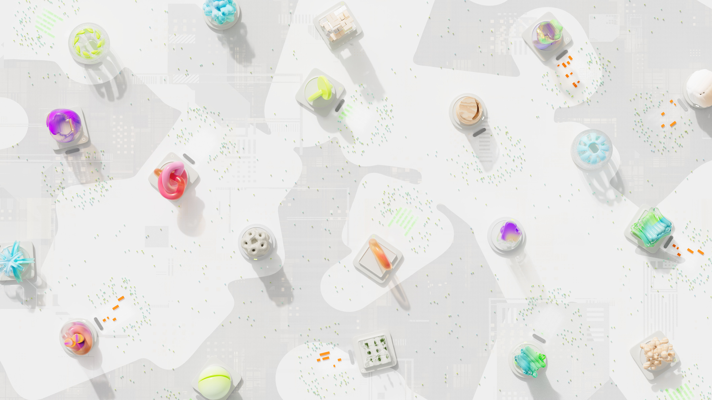

Discover AI tools that can help college students study, research, find job, and stay organized.
Get Started Learn MoreUsing AI tools to review class materials, understand difficult concepts, do brainstorming, and study more efficiently.
Using AI to improve your resume, prepare for the interview, and find more career opportunities and suggestions.
Using AI organize your daily schedule, solve problems, and make everyday life more convenient.
Generative AI is becoming part of everyday student life. From brainstorming papers to developing future career, students are finding new ways to use AI as a learning tool.

Learning how to use AI in a reponsibly way by following class policies and being honest with AI tools' useage.
Different AI tools are good at different tasks. Learning how to finding an AI tool that is most suitable for your task.